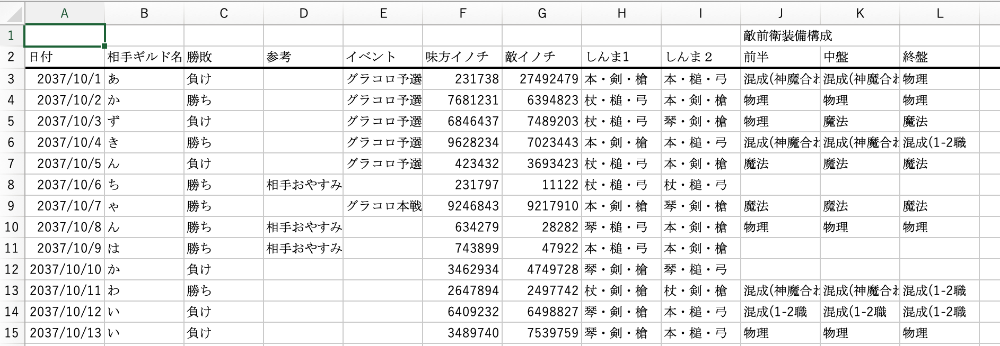

こんにちは、もしかしたらお久しぶりです！
今回は、”SINoALICE”でのExcel活用術という事で書いて行きます。
前回(15日)と比べるとだいぶ真面目寄りな記事になっているはずです。
(自己紹介に関しては15日の記事に書いてるので省略します…)
※ グーグルフォームの使用も想定してVBAは使用しません
多大なる協力をいただいたSBくん
許可をくださったカリスマさん
そういうものを見せてくださった香澄帝さん
ありがとうございましたっ！
SINoALCEは2017年6月6日(仏滅)にSQUARE ENIXとPOKELABOによりリリースされたスマートフォン向けのゲームアプリ。ユーザー、キャラ共にメンヘラが多い
キャッチコピーは”それは最悪の「物語」”
リリース初期の１週間断続メンテナンスや誤配布でユーザーに借金(石)を負わせるソシャゲとして有名(多分)
ディレクターはヨコオタロウさん、音楽は岡部啓一さんと完全にNieR:Automataの
玉の輿に乗った作品である。
リアルタイムRPG(?)であり
基本的にはソロプレイだが15人ギルドでのGvGがメインコンテンツ
物語のあらすじは物語の作者を蘇らせるため物語の登場人物たちが他の登場人物達と戦う(良識フィルター)といった内容である。
公式サイト http://sinoalice.jp
GvGであるコロシアムは最大15vs15のギルド対抗バトルのことであり、1回20分間の戦闘でより多くのイノチを獲得したギルドの勝利となる。
イノチは数値で表され、敵にダメージを与えた場合、敵の船を撃墜した場合などに獲得できる。
やりたいときに集まってマッチングという形ではなく1日１回決まった時間でという形である。
15人中5人が前衛、10人が後衛であり前衛は攻撃、後衛は回復、強化、弱体化を基本的に行う。
前衛ジョブは攻撃武器しか持てず、後衛ジョブも基本的には支援武器しか持てない。(後衛は1種類攻撃武器をだけ持てるがここでは省略)
このゲームでは、キャラクター、ジョブ、装備、ランクの計4 つの要素からHP、物理攻撃、物理防御、魔法攻撃、魔法防御計5つのステータスが決定され、そのステータス値を参考に武器スキルを発動させ攻撃、支援を行なっていく戦闘形式である。
武器には武器それぞれの固有のスキルがあり、攻撃、支援の効果値やどのステータスに影響するかが決められる。
SINoALICEにおいてのメインコンテンツにおけるGvGでは情報の量が勝敗を決めると言っても過言でない。
このゲームでは、攻撃値と防御値のステータスには物理、魔法の2種類があり、ギルドによって得意不得意があることが多い。その得意不得意が大まかに判断できる対戦記録表や、ギルド単位での武器の本数調整で使用される場合が多い。
これをすることで対戦相手ごとに対策ができ勝率が大きく上がる(はず)
多分最低限必要な情報はこれくらい
この時、勝敗の欄としんまと装備構成の欄は楽をする方法があります。
まず勝敗の欄ではIf関数を使います
If関数は”=IF(理論式,真の場合,負の場合)”となっています
この文章だけじゃわかりにくいと思うので例を示すと
“=IF(F3>G3,"勝ち",IF(G3>F3,"負け","引き分け"))”
→もしF3のセルの値がG3よりも大きかった場合ここに”勝ち”と表示する
違った場合G3のセルがF3よりも大きかった場合ここに負けと表示して、
それ以外の場合(F3=G3の時のみ)は引き分けと表示する。
という長い文章が一式で表すことができます。
次に神魔と装備構成の欄ではドロップダウンリストを表示させます。
こんな感じのやつです
神魔には一定の組み合わせがあり、それを別のシートに全て書き写してそこをリストの要素とします。
そのためにはデータの入力規制というものを使います。
ここを押すと条件の設定 許可:全ての値となっているのでここをクリックし、リストを選択します。
ここまで書いてめんどくさくなってきたので動画を撮ります。
録画の止め方がわからなくて挙動不審な人がいますね…
ざっとこんな感じです。動画の中であるようにそのリストの中の要素であればそのセルの中に打ち込むこともできます
以上のファイルのまとめとして、勝率などを出すことができ、
その場合関数の“COUNTIF“を使う必要があります
“COUNTIF”関数は”=COUNTIF(検索範囲,検索事項)”といった形になっています
この画像では勝利数の欄は最初に示した表を参考にしています。
この時の勝利数の関数は”=COUNTIF(Sheet1!$C$3:$C$15,"勝ち")”
となっていて($マークはコピペを楽にするためのものなので入れなくても可)
シート１の範囲で勝ちと書いてある数を数えています。またこの時に、テキストを検索する場合英語版の鉤括弧(?)の””で囲わなければ検索できません。(SUMはわかると思うので略)
こんな感じで大体の表はできると思います()
武器の主要データたくさん打ってから始まるやばいやつです()
打つデータはこんな感じ
重要なことは何よりも横に並べることです。
この理由はこの動画を見ればわかると思います
合計の欄が動いていないことは気にしないでください(許して)
なぜ武器の名前を入れると横に武器の情報が出るのか、これは
“VLOOKUP”という関数を使います
“=VLOOKUP(検索する名前,検索する範囲,見つかった同じものから左から何番目の内容を表示するか,検索の型)”
検索の型はとりあえずFALSEにします。
また検索の範囲は表示させたい範囲全てになります。
この場合B2のセルには”=VLOOKUP($A10,武器データ!$1:$1048576,2,FALSE)”と表記しています。
文章で説明するの仕切れてないですね…とても難しいので、仕方ないですね(逃げ)
これを別のシートに武器20本で絞って行うことでコロシアムや物語用の装備の編成にも使うことができます。
武器の構成要素の列で先ほどの“COUNTIF“関数を使うことで要素数の管理をすることができます。動画で使ったシートの右側です！
“VLOOKUP”関数はデータベースを使用する上でとても便利なので覚えておくと良いと思います！(説明できてないくせに何を…)
シノアリス勢ではないみなさんお待たせしましたっ…
シノアリス勢のみなさんはお疲れ様でした!
まあ、ここでは今までの関数で僕のやっているゲーム内でこんなこともできるねって提案なんですが…
Etc…
って感じですね…
できたらファイルもらえるととても嬉しいです!(たかるな)
また、今まで使ってきた関数はグーグルのスプレッドシートでも使えます!
@aoi_hanana_2525 フォローして…
SBくん本当にありがとうございます…